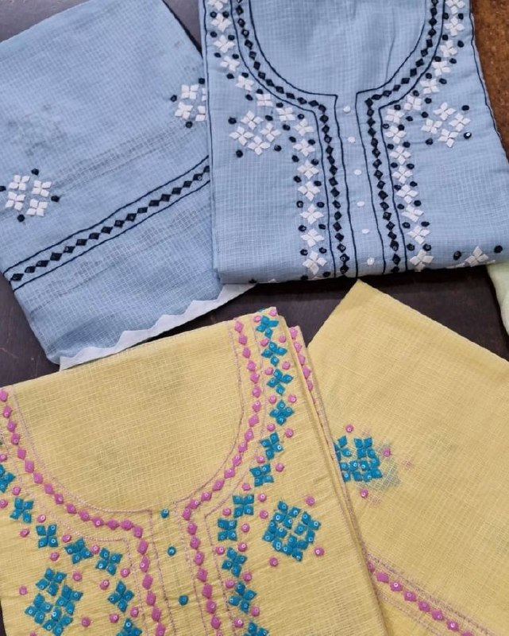
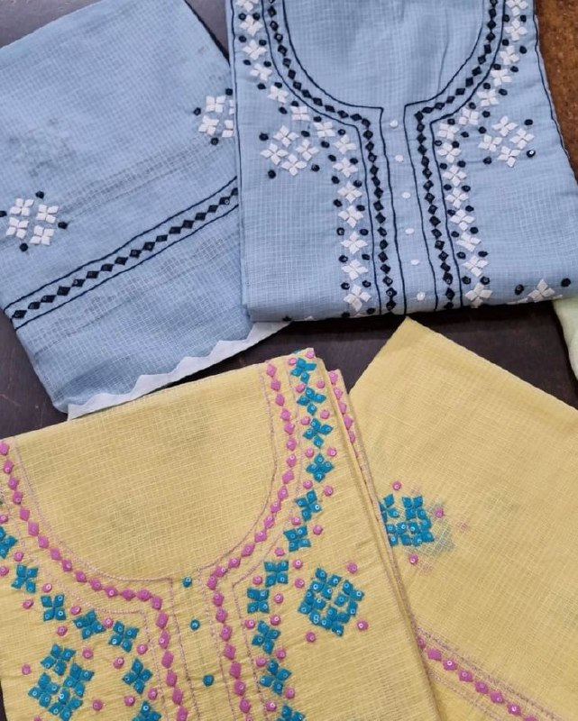

Traditional Dress:
Men
Rural Areas:In villages, men commonly wear kurta-dhoti or kurta-pajama, which are
comfortable and suitable for the warm climate.
The "safa" or "pagdi" (turban) is still worn, especially during ceremonies or by elders and community leaders.
The style and color can signify region, caste, or social status.
Urban Area:In urban centers, many men wear shirts, trousers, and Western-style clothing, but revert to traditional wear during festivals or family events.
Women
Rural Areas:The sari is the most common attire, often worn in a traditional draping style
with bright colors and regional patterns.
In Bundelkhand and parts of Awadh, ghagra-choli or lehenga-choli is also popular, especially among older women
or during traditional functions. These are often adorned with mirror work or embroidery.
Urban Areas: Women wear a mix of modern and traditional outfits such as salwar-kameez,
kurtis, jeans with tunics, etc.
However, during cultural events and religious occasions, traditional dress is preferred, reflecting pride in
heritage.
 
